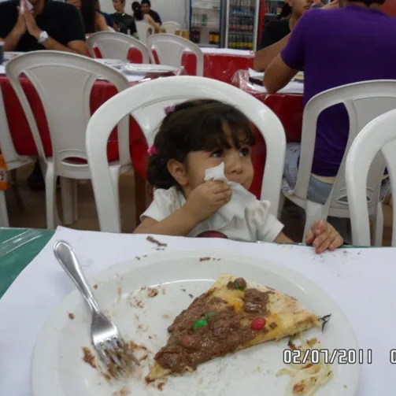
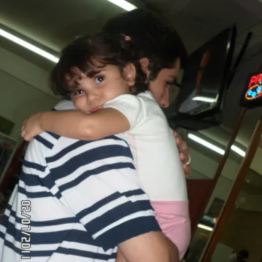
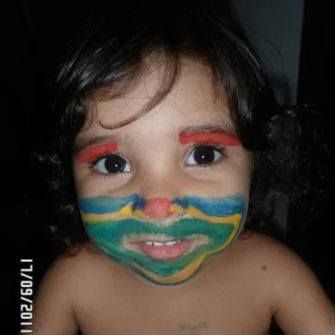
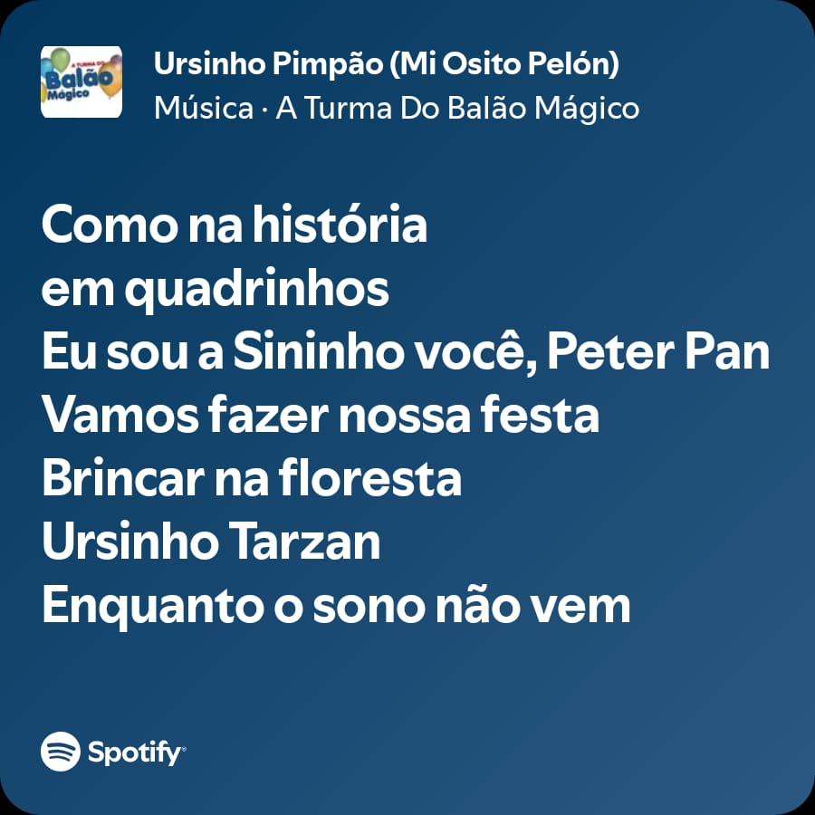
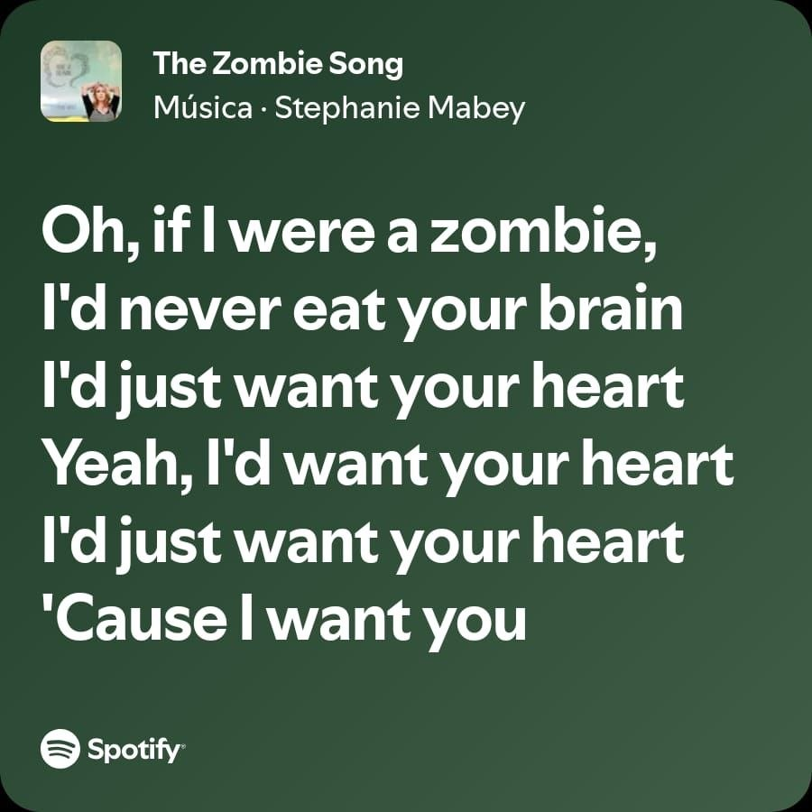
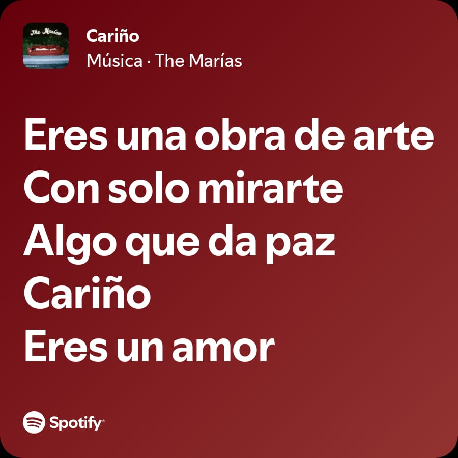
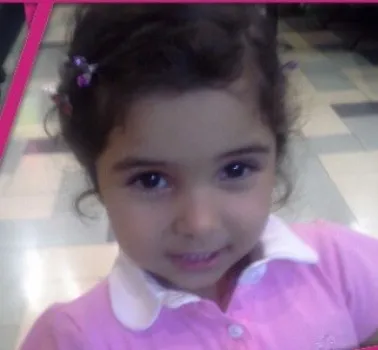
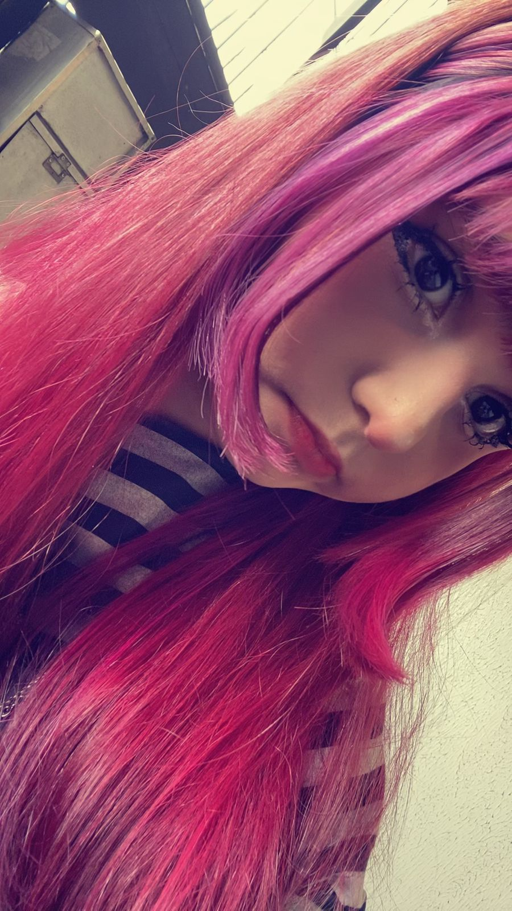

Feliz aniversário
De coração

A foto do garfo
eu gosto muito dessa sua foto e eu acho essa foto sua muito engraçada, porque nela o garfo parece maior do que voce, e eu lembro de você me dizendo que tambem gostava muito dessa foto. eu lembro da primeira vez que você me mandou ela, quando a gente tinha acabado de se conhecer. na hora eu achei engraçada, mas também muito fofinha, e isso acabou ficando guardado em mim.

Foto cansada
essa foto eu lembro que tava no seu instagram, e eu achei ela muito fofinha quando vi. acabei pedindo pra você me mandar, porque achei engraçada e tinha alguma coisa nela que chamava atenção. por um tempo, ela virou a minha foto favorita. não por um motivo grande, mas porque me fazia sorrir e porque era voce nela.

Maquiagem de palhaço
essa foto você me mandou de madrugada, junto com a do seu pai. pelo que eu lembro, você tinha feito a maquiagem com seus irmãos usando tinta guache. eu sempre achei essa foto muito engraçada, principalmente por causa da sua cara nela. ela foi muito especial pra mim, mesmo sendo algo simples e espontâneo, voce esta muito lindinha nessa foto.
Ursinho Pimpão

eu lembro de uma vez em que a gente tava em call, só conversando, sem nada demais, e de repente voce começou a cantar essa musica. foi um momento bem simples, mas que ficou marcado em mim. depois voce me contou que ela era a sua música preferida quando era pequena, e parecia que você tava me mostrando uma coisa que era especial pra voce. um tempo depois, quando voce me mostrou ela em call, aquilo deixou de ser só uma música e virou uma lembrança pra mim por voce mesma ter me mostrado a musica, uma daquelas coisas pequenas que acabam significando muito mais do que parecem.
The Zombie Song

quando a gente se conheceu, voce me passou o seu instagram, e eu fui ver os seus destaques. tinha um story seu com essa musica, e na hora essa musica me lembrou uma memória antiga minha. mas com o tempo isso foi mudando, porque agora, toda vez que eu escuto essa musica, eu lembro de voce. lembro porque você gostava muito dela, e porque um dia voce me mostrou ela em call. você tava fazendo lição no notebook da sua mãe, e a gente tava em call conversando sobre musicas. aí voce começou a me mostrar as que você gostava, e ai chegou nessa. hoje ela me lembra voce em cada detalhe.
Cariño

essa música me lembra bastante voce tambem, porque teve uma vez que você postou uma foto com ela, e eu tinha curtido a foto e salvado a musica porque eu tinha gostado dela. depois, quando voce colocou essa música na playlist que a gente fez, ela passou a ter um significado diferente. não foi nada grandioso, mas com o tempo ela começou a me lembrar de voce, e hoje toda vez que eu escuto, eu acabo lembrando de voce.
feliz anivesario atrasado, isa, eu queria te desejar feliz aniversario de uma forma importante, sem so um feliz aniversario sem graça, eu queria dizer que voce é alguem muito importante pra mim, muito mesmo, eu espero muito que seu aniversario tenha sido muito bom e muito feliz, que voce tenha ganhado bastante presentes e se divertido bastante nele voce é uma pessoa muito especial para todo mundo e que voce é uma amiga muito especial pra t odo mundo e uma amiga muito importante tambem, voce melhora a vida das pessaos sem saber que esta melhorando a vida delas.se existisse uma pessoa para definir como perfeição, voce seria a pessoa. voce é uma pessoa muito legal, muito gente boa, voce ajuda os outros quando elas mais precisa, se alguem falar que voce é uma pessoa ruim ou algo do tipo, essa pessoa com certeza esta mentindo, voce nunca vai ser alguem ruim e desprezivel, voce é a melhor pessoa do mundo. eu espero do fundo do meu coração que a sua vida em curitiba esteja muito boa e muito feliz, eu espero que voce tenha feito bastante amigos e nao esteja mais se sentindo sozinha, voce é uma pessoa que não merece ficar triste nunca e muito menos sozinha, eu espero que atualmente voce seja melhor amiga de todo mundo da sua classe e que voce não se sinta sozinha com eles

só que aí o matheus começou a conversar sério comigo sobre tudo isso e me fez refletir muito, principalmente pq eu vi literalmente acontecer com ele uma situação parecida ele começou mentindo pra isa, mas acabou gostando dela de verdade, só que a mentira foi virando uma bola de neve tão grande que depois ele não conseguia mais desmentir nada, e no final ela acabou descobrindo tudo da pior forma possível e eu lembro dele falando sobre o quanto se arrependia disso até hoje, do quanto queria ter contado antes enquanto ainda dava tempo de fazer as coisas do jeito certo e acho que ver aquilo tão de perto mexeu muito comigo, pq pela primeira vez eu consegui enxergar exatamente o que iria acontecer comigo e com vc se eu continuasse escondendo tudo então eu engoli toda vergonha que eu sentia, todo medo, toda vontade de fugir daquela situação e contei a verdade pra vc, mesmo achando que provavelmente seria o fim de tudo e sinceramente acho que uma das coisas mais bonitas que vc fez por mim foi ficar mesmo depois de conhecer as partes mais bagunçadas de mim, pq eu realmente não tava acostumado com alguém escolhendo continuar comigo depois de ver meus erros e eu sei que nossa relação não é perfeita KKKK, nós dois pensamos demais às vezes, ficamos inseguros, sentimos medo de perder um ao outro e criamos mil cenários na cabeça sem necessidade, mas acho que justamente por isso tudo parece tão verdadeiro pra mim pq nada entre nós parece vazio, até os momentos difíceis tiveram amor escondido no meio deles e talvez seja isso que faz eu amar tanto nossa história, pq ela não parece uma coisa artificial onde tudo aconteceu facilmente, parece duas pessoas completamente perdidas tentando cuidar uma da outra do jeito que conseguiam e mesmo depois de todas as inseguranças, de todos os “isso provavelmente não vai dar certo”, de todas as noites ruins e de tudo que aconteceu antes da gente finalmente ficar juntos de verdade, nós acabamos aqui 1 mês depois ainda nos escolhendo todos os dias ♡
